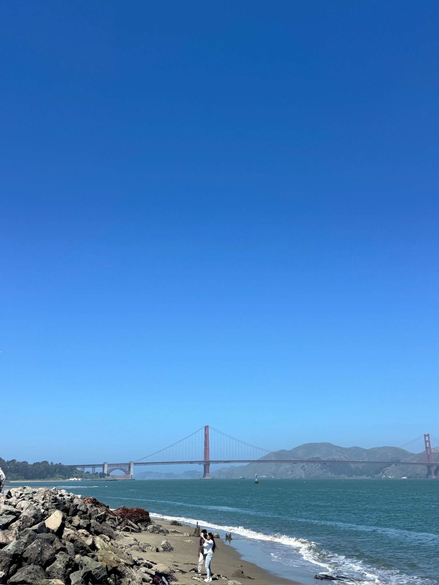
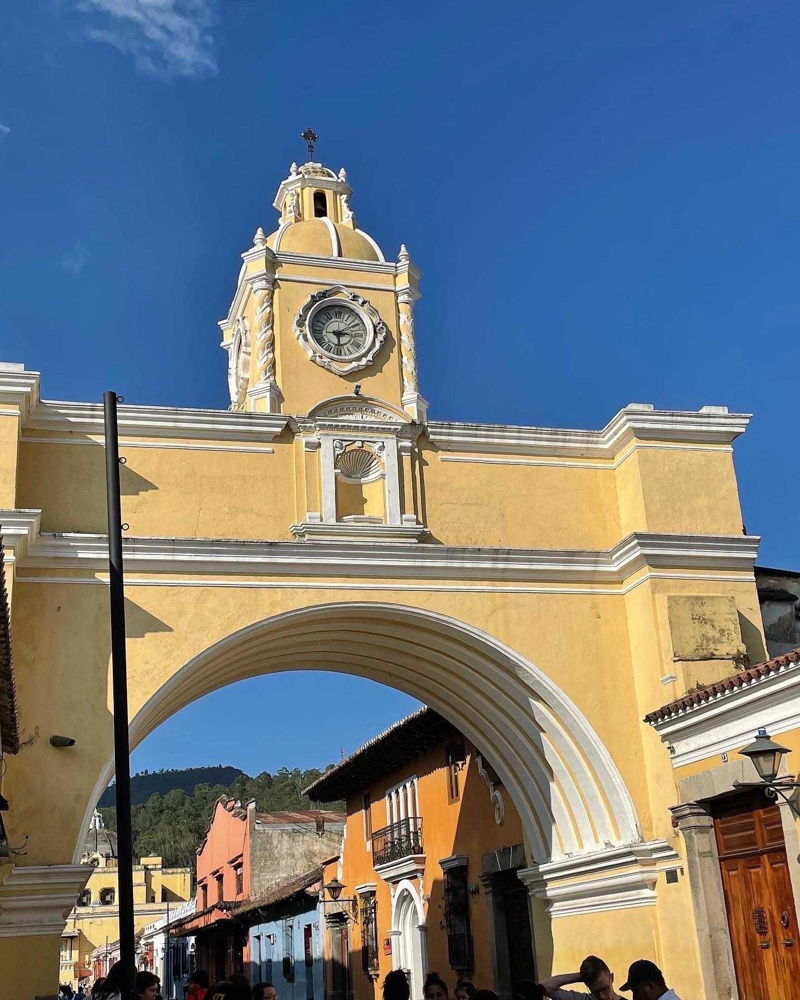
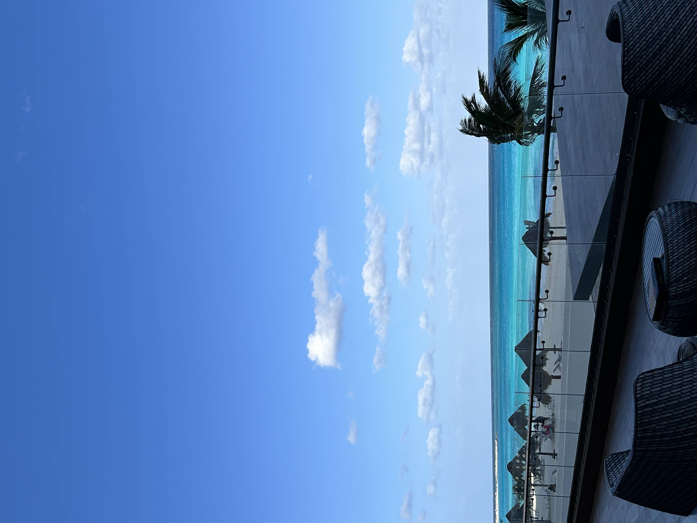

My Favorite Travel Spots
Welcome to My Travel Page
Traveling is one of my favorite ways to experience new cultures, food, and beautiful views. Below are some of my favorite destinations — each one holds special memories and stories. I can't wait to continue exploring the world this upcoming Spring in Europe!
Top Travel Spots
- Place 1: San Francisco, California
- Place 2: Antigua, Guatemala
- Place 3: Cancun, Mexico
Travel Highlights



About My Trips
- San Francisco, California
- My first time in San Francisco was when I visited my college roommate Talia. We tried yummy restaurants, visited Alcatraz, and had some really good coffee! This was in May of 2024!
- Antigua, Guatemala
- This is one of my favorite travel destinations! My family is from Guatemala, so anytime I can go and learn more about my ancestors is really special. This is a famous landmark called Arco de Santa Catalina.
- Cancun, Mexico
- I went to Cancun during spring break in 2024 and it was amazing! The bright blue color of the ocean is to die for. The weather was immaculate and the food was divine.